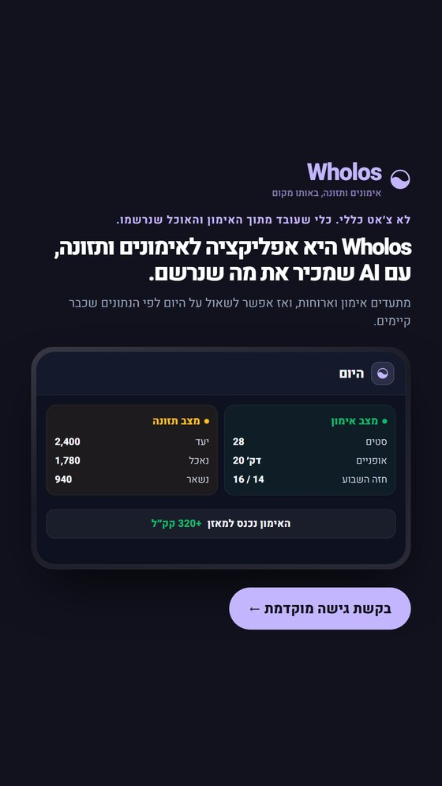
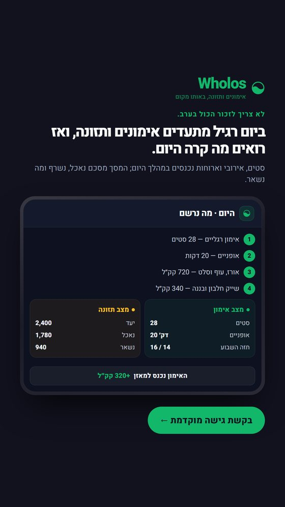
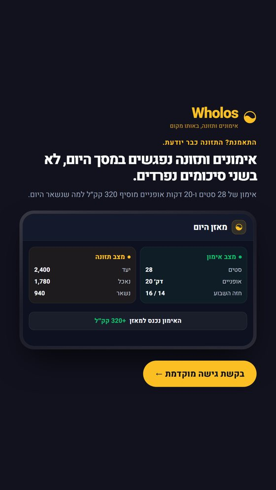
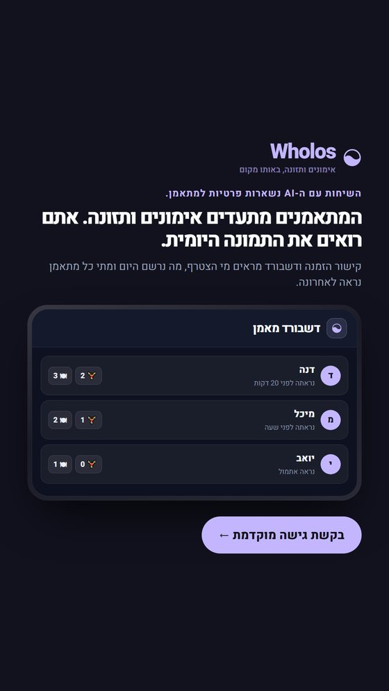
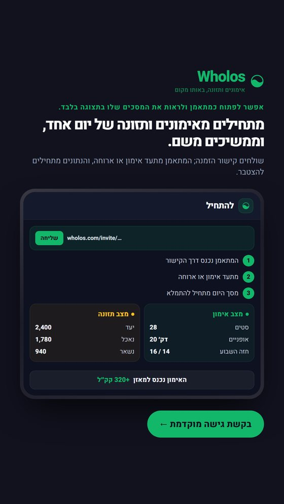

Wholos · סבב היכרות
מה זה בכלל
כל הסבבים עד כה הראו פיצ׳רים למי שכבר יודע מה המוצר. אף אחד עוד לא יודע.
הסבב הזה מתחיל מההתחלה — חמישה קריאייטיבים שעונים, לפי הסדר, על חמש
השאלות הראשונות של מישהו ששומע את השם בפעם הראשונה.
הכלל של הסבב: בכל קריאייטיב נאמר במפורש שמדובר גם באימונים
וגם בתזונה — בכותרת או בשורה שמתחתיה, אף פעם לא ברמז. Wholos היא לא
אפליקציית אימונים שיש בה גם אוכל, ולא יומן אכילה שיש בו גם אימון.
חלק א · היכרות
חמש שאלות, לפי הסדר
1080×1920, שתי גרסאות לכל אחד. הכותרות כאן ארוכות מהרגיל בכוונה —
היכרות מסבירה, היא לא מססמת.

1מה זה בכלל?i01-what
Wholos היא אפליקציה לאימונים ותזונה, עם AI שמכיר את מה שנרשם.
מתעדים אימון וארוחות, ואז אפשר לשאול על היום לפי הנתונים שכבר קיימים.
ההיכרות הבסיסית: מה זה, בשורה אחת, ושני התחומים נאמרים במפורש.

2איך נראה יום רגיל?i02-day
ביום רגיל מתעדים אימונים ותזונה, ואז רואים מה קרה היום.
סטים, אירובי וארוחות נכנסים במהלך היום; המסך מסכם נאכל, נשרף ומה נשאר.
עונה על השאלה מה בעצם עושים שם ביום רגיל.

3למה שניהם יחד?i03-connection
אימונים ותזונה נפגשים במסך היום, לא בשני סיכומים נפרדים.
אימון של 28 סטים ו-20 דקות אופניים מוסיף 320 קק״ל למה שנשאר היום.
מסביר למה שני התחומים באותו מקום, עם מספר אמיתי.

4מה אני מקבל כמאמן?i04-coach
המתאמנים מתעדים אימונים ותזונה. אתם רואים את התמונה היומית.
קישור הזמנה ודשבורד מראים מי הצטרף, מה נרשם היום ומתי כל מתאמן נראה לאחרונה.
עונה למאמן על השאלה מה אני מקבל מזה.

5איך מתחילים?i05-start
מתחילים מאימונים ותזונה של יום אחד, וממשיכים משם.
שולחים קישור הזמנה; המתאמן מתעד אימון או ארוחה, והנתונים מתחילים להצטבר.
מוריד את מחסום ההתחלה: יום אחד מספיק כדי להתחיל.
חלק ב · לאונרדו נקי
אותם שישה רעיונות, שני מודלים
כאן המודל מייצר הכול — התמונה, ממשק המוצר שבתוכה, והטיפוגרפיה העברית.
אותו פרומפט בדיוק עבר בשני מודלים כדי שאפשר יהיה להשוות. הפרומפטים נכתבו
בעברית, כי פרומפט באנגלית גורם למודל להמציא ממשק באנגלית בתוך התמונה.
| מה נמדד | Nano Banana Pro | GPT Image 2 |
|---|
| כותרות (12 בסך הכול) | 6 / 6 תקינות | 6 / 6 תקינות |
| טקסט קטן בתוך ממשק | שיבושים — למשל ״ממתונים״ במקום ״מתאמנים״ | נקי בכל הששה, כולל שמות, זמנים ומספרים |
| מחיר ליצירה | $0.21 | $0.15 |
| גודל | 1536×2752 (9:16) | 1024×1536 (2:3) — הפורטרט היחיד שהוא מקבל |
המסקנה: לכיתוב גדול שני המודלים עובדים.
לתמונה שיש בה ממשק עם טקסט קטן בעברית — GPT Image 2 יצא מדויק
יותר, וגם זול יותר. זה הפוך ממה שהיה רשום אצלנו עד היום, והתיעוד עודכן.
בכל מקרה כל תמונה כזאת עוברת הגהה אות-אות, והטקסט צרוב ולא ניתן לתיקון.
אימונים ותזונה
l01
פוסטר היכרות ישיר: שני התחומים נאמרים במפורש ונראים כמסכי מוצר אמיתיים.
הפרומפט
Wholos היא אפליקציה שבה מתעדים אימונים וארוחות, והנתונים של שניהם מופיעים באותו יום. הציגו רגע שבו מסך אימון חי ומסך תזונה חי מתקרבים זה לזה סביב אותו סיכום יומי, כך שמבינים שמדובר בשני סוגי תיעוד שונים שעובדים יחד. במסכי המוצר הציגו את המספרים: יעד 2,400, נאכל 1,780, נשרף באימון 320, נשאר 940, חזה 16/14, 28 סטים ו-20 דקות אופניים. הכיתוב הראשי והיחיד הוא: אימונים ותזונה. כל טקסט בתמונה חייב להיות בעברית בלבד ובניגודיות גבוהה. ללא רובוטים, ללא צילומי סטוק וללא קלישאות חדר כושר.
אוכל אחרי אימון
l02
מציג את החיבור דרך סיטואציה מוכרת, בלי לתת הוראה תזונתית ובלי להסתפק בתמונת אוכל.
הפרומפט
Wholos היא אפליקציה שמתעדת אימונים וארוחות ומחשבת את תמונת היום לפי שניהם. הציגו את הרגע שאחרי אימון: אימון שהושלם נכנס לסיכום היומי, ולצדו ארוחה שנרשמת לרכיבים. הרעיון הוא שהארוחה לא מופיעה בחלל ריק, אלא בהקשר של מה שכבר קרה באימון. הציגו במסכי המוצר: יעד 2,400, נאכל 1,780, נשרף באימון 320, נשאר 940, חזה 16/14, 28 סטים ו-20 דקות אופניים. הכיתוב הראשי והיחיד הוא: אוכל אחרי אימון. כל טקסט בתמונה חייב להיות בעברית בלבד ובניגודיות גבוהה. ללא רובוטים, ללא צילומי סטוק וללא צלחת אוכל מנותקת מהמוצר.
הם מתעדים אתם רואים
l03
פונה למאמנים עם תיאור מדויק של מה שהם מקבלים: תיעוד נראה לעין, לא מערכת ניהול מנופחת.
הפרומפט
Wholos היא אפליקציה שבה מתאמנים מתעדים אימונים וארוחות, ומאמן יכול לראות בדשבורד מה נרשם ומתי המתאמן נראה לאחרונה. הציגו דשבורד מאמן עם רשימת מתאמנים ולצדו תצוגת מתאמן עם באנר ברור של צפייה בלבד. במסכי המוצר הציגו: יעד 2,400, נאכל 1,780, נשרף באימון 320, נשאר 940, חזה 16/14, 28 סטים ו-20 דקות אופניים. אין להציג שיחות AI, עריכה בשם המתאמן או מערכת הודעות. הכיתוב הראשי והיחיד הוא: הם מתעדים אתם רואים. כל טקסט בתמונה חייב להיות בעברית בלבד ובניגודיות גבוהה.
מה עושים היום
l04
מדגיש שה-AI אינו צ׳אט מנותק: הוא מציע פעולה מתוך מה שכבר קרה באימונים ובתזונה.
הפרומפט
Wholos היא אפליקציה לאימונים ותזונה עם AI שמכיר את האימונים, הארוחות והיעדים שכבר נרשמו. הציגו מסך שיחה שבו השאלה מה עושים היום מובילה לכרטיס פעולה שימושי, ולצדו סיכום היום שמראה למה ההצעה קשורה גם לאימון וגם לאוכל. הציגו במסכי המוצר: יעד 2,400, נאכל 1,780, נשרף באימון 320, נשאר 940, חזה 16/14, 28 סטים ו-20 דקות אופניים. הכיתוב הראשי והיחיד הוא: מה עושים היום. כל טקסט בתמונה חייב להיות בעברית בלבד ובניגודיות גבוהה. ללא מוח AI, neural network או רובוטים.
אימון משנה את היום
l05
מסביר את ההבטחה המוצרית המרכזית דרך מספרים אמיתיים: האימון משפיע על הסיכום התזונתי.
הפרומפט
Wholos היא אפליקציה שבה אימון ותזונה נרשמים במהלך אותו יום. הציגו את התוצאה המוחשית של אימון שהושלם: 28 סטים ו-20 דקות אופניים הופכים ל-320 קק״ל שנשרפו, והמסך מציג מחדש כמה נשאר מתוך היום. לצד זה נראית הארוחה שכבר נרשמה. במסכי המוצר הציגו: יעד 2,400, נאכל 1,780, נשרף באימון 320, נשאר 940, חזה 16/14. הכיתוב הראשי והיחיד הוא: אימון משנה את היום. כל טקסט בתמונה חייב להיות בעברית בלבד ובניגודיות גבוהה.
אימון ותזונה היום
l06
מסכם בפשטות מה עושים במוצר ביום רגיל, ומבהיר כבר בקריאה הראשונה שמדובר גם באימון וגם בתזונה.
הפרומפט
Wholos היא אפליקציה שבה אפשר לתעד אימונים, ארוחות ויעדים באותו יום, ואז להבין מה כבר נעשה ומה נשאר. הציגו יום אחד כמסלול קצר של פעולות אמיתיות: סטים שנרשמים, ארוחה שמתפרקת לרכיבים, ואז מסך היום שמחבר ביניהם. במסכי המוצר הציגו: יעד 2,400, נאכל 1,780, נשרף באימון 320, נשאר 940, חזה 16/14, 28 סטים ו-20 דקות אופניים. הכיתוב הראשי והיחיד הוא: אימון ותזונה היום. כל טקסט בתמונה חייב להיות בעברית בלבד ובניגודיות גבוהה. ללא צילומי סטוק, ללא משקולות כקלישאה וללא גרפיקה רוחנית.